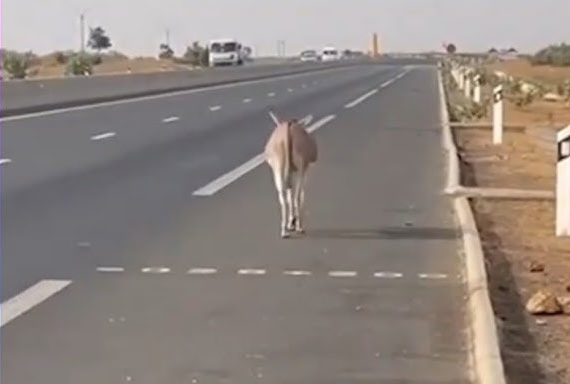
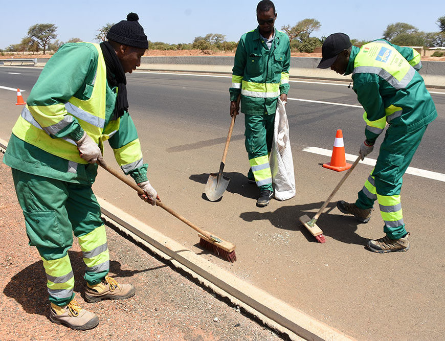

Une réponse adaptée à chaque situation
Sur l'autoroute, l'imprévu fait partie du quotidien. Nos équipes sont entraînées à gérer toute typologie d'événement avec la même rigueur et la même réactivité.

Gestion des accidents
Lorsqu'un accident survient sur l'autoroute, chaque seconde compte. Nos équipes interviennent immédiatement pour sécuriser le périmètre, porter assistance aux usagers et coordonner les opérations avec les services de secours.

Remorquage de véhicules
Un véhicule en panne ou immobilisé représente un risque pour la circulation. Nos dépanneuses spécialisées libèrent rapidement la voie tout en accompagnant l'usager dans ses démarches.

Animaux en divagation
Les animaux égarés sur l'autoroute représentent un danger majeur, à la fois pour les usagers et pour l'animal lui-même. Nos équipes interviennent dans le respect du bien-être animal pour évacuer ces situations à risque.

Autres incidents
Au-delà des situations principales, nos équipes prennent en charge tous types d'imprévus pour maintenir la qualité du service et la sécurité du réseau.